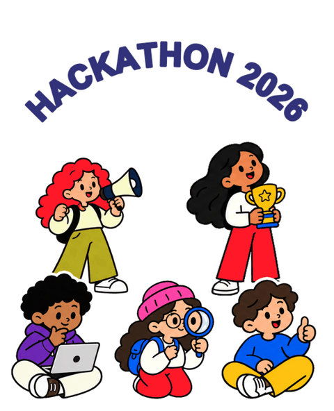

Taller · Hackathon CoAfina 2026
Herramientas y recursos útiles para el hackathon (y tu carrera)
Arturo Sánchez Pineda
Martes 24 de noviembre de 2026 · 13:00 (GMT-5)
Avanza con las flechas ← → del teclado, con los botones de abajo o deslizando.

Antes de empezar
Declinación de responsabilidad
Las opiniones y adjetivos presentados en estas láminas se deben atribuir solo a mi persona y no a ninguna institución a la que haya estado o aún esté asociado, y tampoco representan opiniones de las mismas.
Arturo Sánchez Pineda · linkedin.com/in/arturo-sanchez-pineda
El plan
¿Qué queremos hacer hoy?
Vamos a dar un paseo en línea por una serie de herramientas, algunas súper bien conocidas y otras un poco menos.
La idea es que tantas personas como sea posible tengan una caja de herramientas lo suficientemente amplia para trabajar durante el hackathon y, en general, para sus estudios o su trabajo.
El paseo
Diecisiete paradas
1 Parada 1 de 17
Ideación y colaboración
Herramientas para definir el proyecto en equipo. Escritura de documentos (Google Docs), la creación de diagramas de flujo (Diagrams.net) y el diseño colaborativo de la interfaz de usuario (Penpot, FigJam).
Claro está, hay opciones de código abierto…
- Google Docsdocs.google.com ↗
- Google Sheetssheets.google.com ↗
- Google Slidesdocs.google.com ↗
- Google Sitessites.google.com ↗
- Diagrams.net (draw.io)app.diagrams.net ↗
- Excalidrawexcalidraw.com ↗
- FigJamfigma.com ↗
- Penpot (código abierto)penpot.app ↗
- Mermaid en GitHubdocs.github.com ↗
- CryptPad (código abierto, cifrado)nuevocryptpad.org ↗
2 Parada 2 de 17
Código, versionamiento y documentación
El núcleo técnico del proyecto. Usa GitHub para guardar el código y controlar sus cambios, Markdown para documentarlo, y GitHub Pages y Actions para publicarlo y automatizar tareas.
3 Parada 3 de 17
Entornos reproducibles de notebooks
El laboratorio de análisis de datos. Incluye notebooks en la nube (Colab), entornos de desarrollo completos (Codespaces) y herramientas (MyBinder) para garantizar la reproducibilidad del análisis.
4 Parada 4 de 17
Datos abiertos y APIs sencillas
Fuentes de datos listas para consumir. APIs para obtener indicadores socioeconómicos (World Bank), datos geoespaciales (OSM) y datos cívicos de portales de gobierno (México, Chile, Colombia).
- World Bank APIdata.worldbank.org ↗
- Overpass (OSM)dev.overpass-api.de ↗
- NASA APIsapi.nasa.gov ↗
- OpenWeather APIopenweathermap.org ↗
- Datos Abiertos Méxicodatos.gob.mx ↗
- Datos Abiertos Chiledatos.gob.cl ↗
- Datos Abiertos Colombiadatos.gov.co ↗
- CEPALSTAT (CEPAL)nuevostatistics.cepal.org ↗
- Our World in Datanuevoourworldindata.org ↗
- Humanitarian Data Exchangenuevodata.humdata.org ↗
5 Parada 5 de 17
Wikidata y Wikimedia
Acceso a la base de conocimiento estructurada más grande del mundo. Usa SPARQL (Wikidata) para datos relacionales complejos y la API de Commons para obtener imágenes y medios libres.
6 Parada 6 de 17
Visualización y prototipado sin ser dev web
Herramientas para crear aplicaciones web interactivas rápidamente. Convierte scripts de Python en dashboards (Streamlit) o crea mapas personalizados y reportes (uMap, Looker Studio).
7 Parada 7 de 17
Diseño, multimedia y 3D
El stack creativo de código abierto. Incluye diseño 3D y renders (Blender), grabación de la demo (OBS Studio) y diseño gráfico vectorial o ráster (Inkscape, GIMP, Krita).
8 Parada 8 de 17
Publicación, trazabilidad y licencias
El módulo de ciencia abierta. Asegura el crédito de autor (ORCID), obtiene un DOI citable (Zenodo) y aplica la licencia legal correcta (Creative Commons, ODbL).
- Zenodo ↔ GitHubhelp.zenodo.org ↗
- Zenodozenodo.org ↗
- ORCID (registro)orcid.org ↗
- Creative Commons Chooserchooser-beta.creativecommons.org ↗
- Open Data Commons (ODbL, ODC-BY, PDDL)opendatacommons.org ↗
- CITATION.cffcitation-file-format.github.io ↗
- Choose a Licensenuevochoosealicense.com ↗
- Software Heritagenuevosoftwareheritage.org ↗
9 Parada 9 de 17
Automatización CI/CD y contenedores
Prácticas avanzadas de DevOps. Usa GitHub Actions para automatizar pruebas y despliegues, y Docker o Podman para empaquetar la aplicación y garantizar que funcione en cualquier lugar.
10 Parada 10 de 17
OCR y digitalización
Digitalización de datos no estructurados. Utiliza Tesseract (OCR) y pytesseract para extraer texto de imágenes o PDF escaneados y convertirlos en datos analizables.
11 Parada 11 de 17
Google y LLMs
Uso de IA generativa como copiloto. Incluye la API de Gemini (AI Studio) para asistir en el código o el análisis, y NotebookLM para consultar sobre tus propios documentos.
12 Parada 12 de 17
Blogs y difusión
Plataformas para contar la historia de tu proyecto. Incluye generadores de sitios estáticos para documentación (MkDocs, Quarto) y plataformas de blogging (Ghost, Blogger).
13 Parada 13 de 17
Limpieza y validación de datos
Herramientas para asegurar la calidad de los datos. Incluye limpieza interactiva de datos «sucios» (OpenRefine) y validación de la estructura (Frictionless Data).
14 Parada 14 de 17
Mapas, sonido y 3D en la web
Bibliotecas para que tu prototipo se vea, se escuche y se explore. Mapas interactivos (Leaflet, MapLibre, kepler.gl), análisis geoespacial de escritorio (QGIS), sonido en el navegador (Tone.js) y escenas 3D (Three.js).
15 Parada 15 de 17
Despliegue: publica tu demo
Dónde poner tu prototipo para que el jurado lo abra con un enlace. Sitios estáticos (GitHub Pages, Netlify), aplicaciones y bases de datos (Render) y demos de Python (Streamlit Community Cloud, Hugging Face Spaces).
Revisa las condiciones del plan gratuito de cada servicio.
16 Parada 16 de 17
Accesibilidad
Herramientas para comprobar que cualquier persona pueda usar tu solución. Revisión automática de páginas (WAVE, Lighthouse), contraste de colores (WebAIM) y un lector de pantalla gratuito para probarla de verdad (NVDA).
17 Parada 17 de 17
Aprender y seguir creciendo
Para después del hackathon (y para tu carrera). Lecciones abiertas de programación y datos en español (The Carpentries, freeCodeCamp), una guía de ciencia reproducible (The Turing Way) y cursos cortos con práctica (Kaggle Learn, GitHub Skills).
- La terminal de Unix (Software Carpentry)nuevoswcarpentry.github.io ↗
- Git (Software Carpentry)nuevoswcarpentry.github.io ↗
- R para análisis de datos (Software Carpentry)nuevoswcarpentry.github.io ↗
- freeCodeCamp en españolnuevofreecodecamp.org ↗
- The Turing Waynuevobook.the-turing-way.org ↗
- Kaggle Learnnuevokaggle.com ↗
- GitHub Skillsnuevogithub.com ↗
- GitHub Student Developer Packnuevoeducation.github.com ↗
Este año
Los datos de los once retos
Cada reto de 2026 parte de datos abiertos reales. Aquí está la puerta de entrada de cada uno; el detalle, las licencias y los tamaños están en la sección de retos del sitio.
- Reto 01 · USGS ComCat: sismos de 2025earthquake.usgs.gov ↗
- Reto 02 · Wikidata Query Servicequery.wikidata.org ↗
- Reto 03 · El Venezolano (1845), Red de Historiaarchivo.redhistoriave.org ↗
- Reto 04 · 600 kits para crear: datos públicosgithub.com ↗
- Reto 05 · BasinATLAS (con GeoNames y GHSL)doi.org ↗
- Reto 06 · GBIF: biodiversidad de Venezuelagbif.org ↗
- Reto 07 · Cascadas simuladas con CORSIKAgithub.com ↗
- Reto 08 · Colección Reinhart en Wikidataw.wiki ↗
- Reto 09 · Radar Cultural (beta)luna.alf4.org ↗
- Reto 10 · ERA5, Copernicuscds.climate.copernicus.eu ↗
- Reto 11 · Gaia Archive (ESA)gea.esac.esa.int ↗
Y hay más
La lista sigue en el sitio de CoAfina
En la página del hackathon hay más herramientas gratuitas o de código abierto para alojar, analizar, visualizar y desplegar tu solución. La lista vive en el README del repositorio.
¿Falta una herramienta? Abre un pull request o propónla en Discord.
Dónde nos encontramos
Espacios de comunicación y feedback: Discord y Zoom
Si es tu primera vez usando Discord o Zoom, mira estos tutoriales cortos:
¿Ya te uniste al Discord? ¡Es súper importante!
Hackathon CoAfina 2026 · 27, 28 y 29 de noviembre
¡Gracias!
¿Preguntas? Escríbeme en Discord: artfisica
![Código QR que lleva a laconga.redclara.net/hackathon]() laconga.redclara.net/hackathon
laconga.redclara.net/hackathon